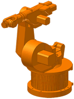

Portfolio - Industrieroboter
Industrieroboter

Industrieroboter (IR) sind automatisch gesteuerte, frei und wieder programmierbare, vielfach einsetzbare Handhabungsgeräte mit mehreren Freiheitsgraden (mindestens 3 Achsen),
die entweder ortsfest oder beweglich in automatisierten Fertigungssystemen eingesetzt werden.
Sie gewinnen durch ihre vielen Vorteile immer mehr an Bedeutung in der modernen Industrie, aber auch im Dienstleistungsgewerbe.
Ziele des Einsatzes von Industrierobotern
- Humanisierung
- Entlastung der Arbeitnehmer von Gewichten, thermischen Belastungen, monotonen Arbeiten und giftigen Stoffen
- Verbesserung der Wirtschaftlichkeit
- Erhöhung der Arbeitsgeschwindigkeit, keine Pausenzeiten, keine Krankheitsausfälle
- Erhöhung und Sicherung von Qualität
- immer exakt der gleiche Arbeitsablauf, keine Ablenkungen bzw. Störungen
Einsatzfelder von IR
- Schweißen
- Punktschweißen, Bahnschweißen
- Bearbeiten
- Schneiden (Plasma, Wasser, Laser), Polieren, Schleifen, Entgraten, Bohren, Fräsen
- Beschichten
- Lackieren, Auftragen von Klebstoff
- Montage/Demontage
- Leiterplattenbestückung, KFZ-Industrie
- Handhaben
- Zuführen, Palettieren, Beschicken, Ordnen/Sortieren
- Dienstleistungen
- Tankstellen, Haushalt, Freizeit, Bauindustrie